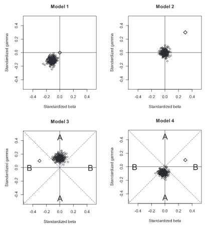
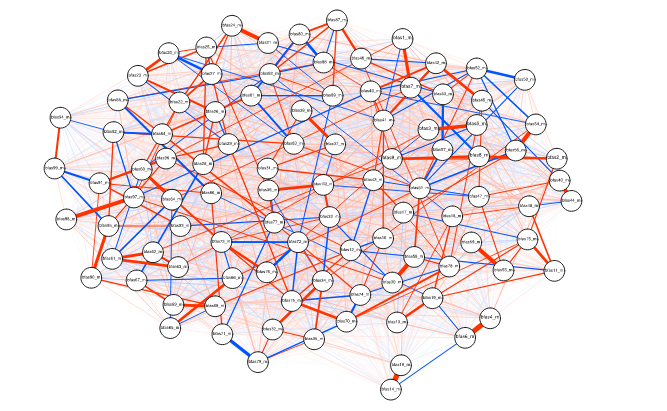

I'm a developmental social-personality cognitive neuroscientist.
- Developmental Social Neuroscience Lab (Jennifer Pfeifer)
- Personality and Social Dynamics Lab (Sanjay Srivastava)
1/11/2018
I'm a developmental social-personality cognitive neuroscientist.
Developmental Social Neuroscience
Personality and Social Dynamics
Brief discussion of project results and key methodological insights
Do individual differences in empathic concern predict future prosocial behavior? Is this mediated by "affective resonance" neural processes?
Empathic concern: Sympathy, compassion; aligned emotions for another person's suffering.
Evidence of association between EC and prosocial behavior throughout development (Barr & Higgins-D’Alessandro, 2007; Brownell et al., 2013; Eisenberg, 2003; Eisenberg et al., 1991; Eisenberg et al., 1987; Farrant et al., 2012; Litvack-Miller et al., 1997)
Empathic concern is an emotional reaction that will be activated by other people's emotional expressions.
Given that a neural region is functionally active in response to other people's emotions, does that functional activation explain some of the link between EC and prosocial behavior?
What does a particular region's involvement tell us about this link?
Two waves, only participants with fMRI at wave 1 & 2.

Displays faces from NimStim for 2 seconds
Measures of target constructs:
During an average week, how many hours do you spend helping other people without getting paid (such as helping out at a hospital, daycare center, food shelf, youth program, community service agency, or doing other things)
Table of Mean Scores (with Standard Deviation)
| Wave | Age | Empathic Concern | Personal Distress | Prosocial Behavior |
|---|---|---|---|---|
| 1 | 10.1 (.31) | 59.0 (13.3) | 45.1 (13.1) | 49.1 (16.2) |
| 2 | 13.1 (.31) | 63.8 (12.9) | 39.7 (14.8) | 48.0 (18.2) |

Diagram of proposed analyses
Empathic concern at wave 1 predicts prosocial behavior at wave 2
\(b = 0.44, t(51) = 2.42, p = .02\)
Empathic concern at wave 1 predicts neural response to faces at wave 2

IFG (peak at [-51, 20, 25]) mediates relation between wave 1 EC and wave 2 PSB
\(\Delta 1 \text{SD}_{\text{EC}} = \Delta 0.38 \text{SD}_{\text{PSB}}\)
Proportion of effect mediated = .51, p = .01.
lIFG: Language, cognitive control.
Perhaps EC promotes PSB via linguistic processing of emotional cues.
or, what I've learned since then:
Personality changes throughout adulthood. Do changes in values drive some of this change? How to best model these influences?
Cross-lagged panel model, but better:
The Latent Curve Model with Structured Residuals (LCM-SR; Curran et al., 2013)

Growth curve with cross lagged residuals
Models need to account for both between- and within-person variance or risk extreme bias (Hamaker et al., 2015).

Figure 2. Simulations reveal misspecification bias
A lot of intercept-to-intercept correlations at p < .005.
For example, Agreeableness (and facets) intercept negatively correlate with financial aspirations, materialism, unmitigated self-interest, and individualism.
Lagged effects:
Bootstrapped, regularized partial-correlation networks and network statistics (using UO high-performance computing cluster)
E.g., betweenness: how many shortest routes does a node sit on?

Claims about ties between nodes strengthened by
Model misspecification can easily lead one to make categorically incorrect decisions
Different models can powerfully encode different hypotheses
The big question: Why do negative health outcomes increase in adolescence?
 Focus on choosing risky rewards, and peer influences.
Focus on choosing risky rewards, and peer influences.
Characterizing a laboratory task commonly used to investigage risk decisions.
The Stoplight Game (Steinberg et al, 2008) has been used in dozens of experiments.
The YLG software is Customizable. This version:
All analyses in R package: ylglearning


TABLE ABOUT HERE
Do people perform more optimally in either of the peer conditions?
Are indices of learning separable from indices of risk-tolerance?
My approach: How do the motivations behind "motivated adolescent behavior" change?
Many have argued that adolescent changes in reward seeking and risk tolerance may be adaptive:
Why?
Understanding function of changes in reward processing is necessary for complete description of its consequences:
Two mutually reinforcing goals:

NUMBERS ARE NOT RIGHT